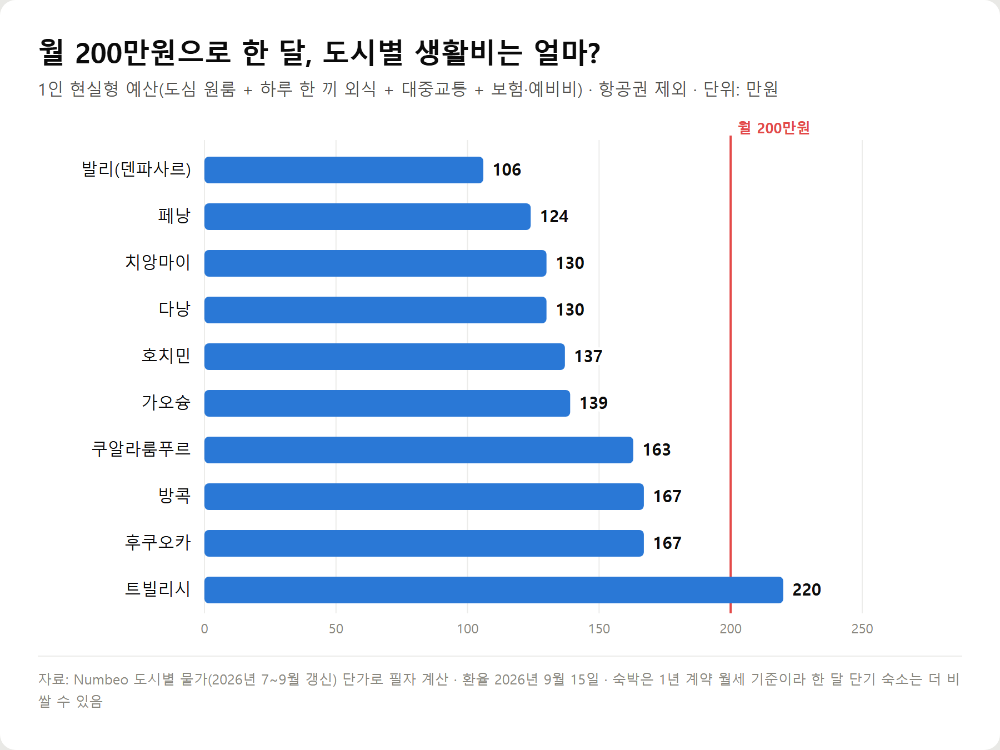
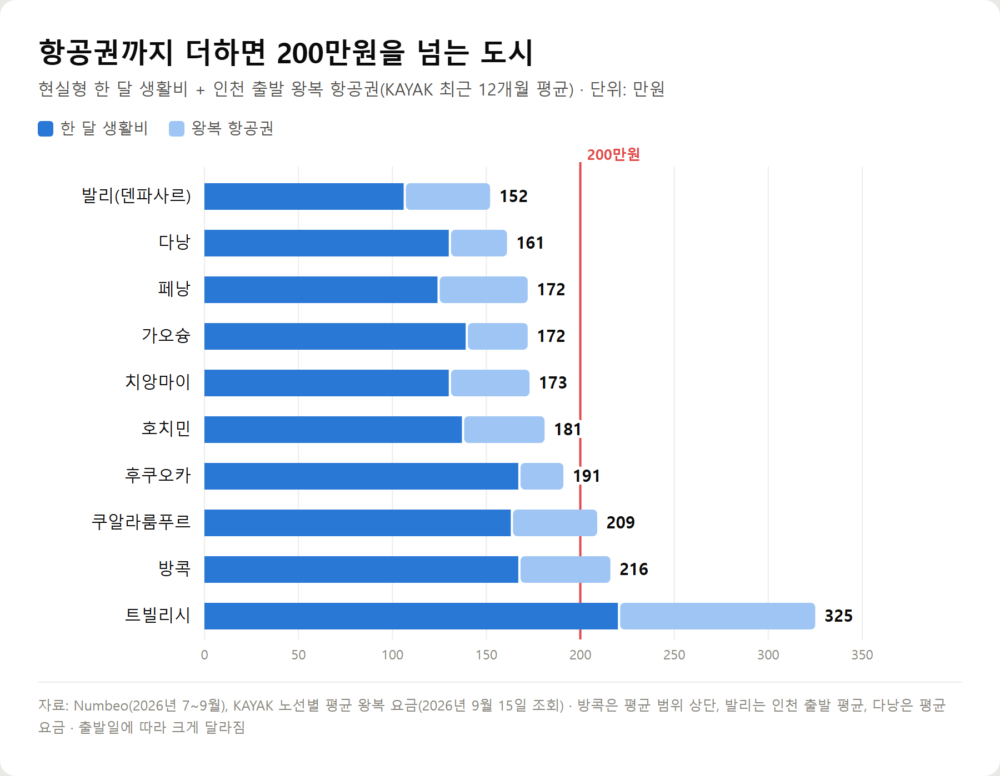
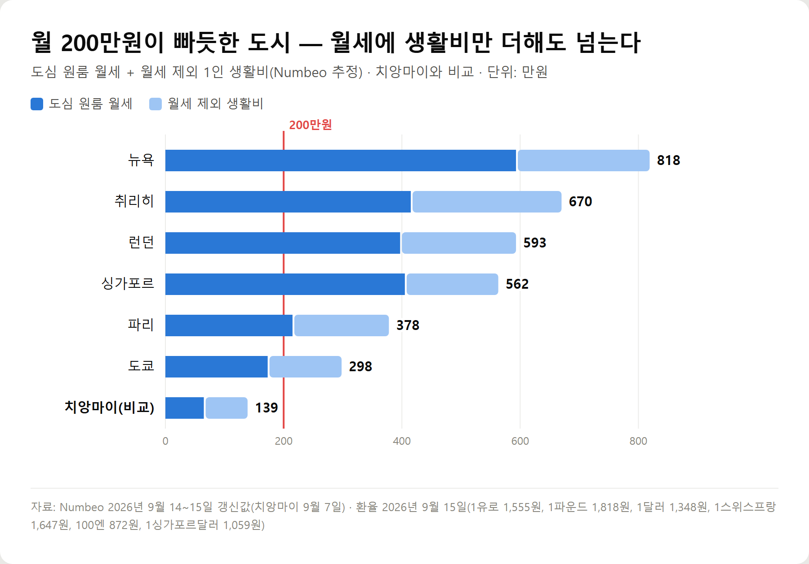
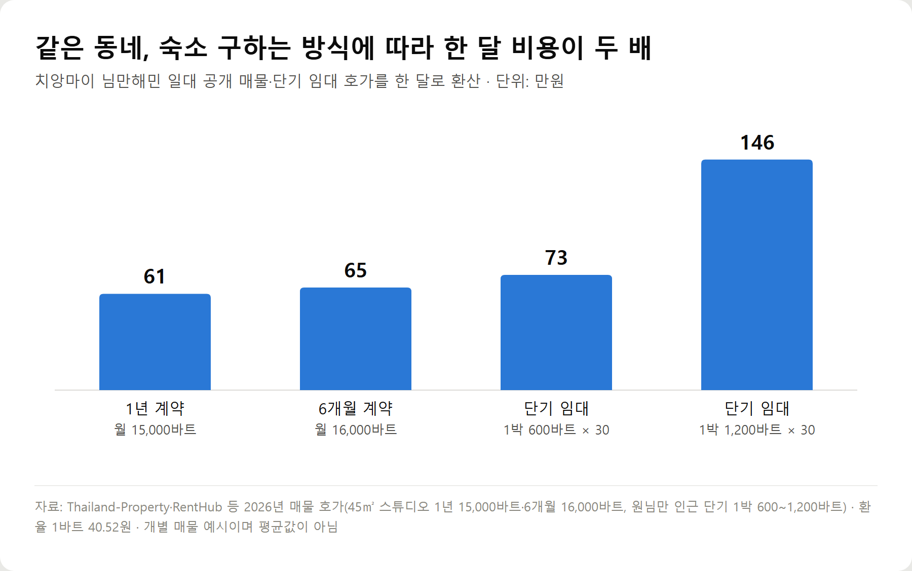

<meta charset="utf-8">
<title>월 200만원 해외 한달살기 도시 10곳 — 생활비·항공권·비자 비교 — 나의 투자 그리고 행복한 여행</title>
<meta name="description" content="월 200만원으로 해외 한달살기가 가능한지 2026년 9월 물가·환율로 계산했습니다. 치앙마이·페낭·가오슝 등 추천 도시 10곳의 숙박·식비·생활비와 항공권 포함 총액, 비자·치안·겨울 날씨까지 50·60대 기준으로 비교합니다.">
<meta name="viewport" content="width=device-width, initial-scale=1">
<link rel="canonical" href="https://worldtraveler1.tistory.com/67">
<link rel="preconnect" href="https://fonts.googleapis.com">
<link rel="preconnect" href="https://fonts.gstatic.com" crossorigin>
<link rel="stylesheet" href="https://fonts.googleapis.com/css2?family=Hahmlet:wght@400;600;800&family=IBM+Plex+Mono:wght@400;500&family=IBM+Plex+Sans+KR:wght@300;400;500;600&display=swap">

<style>
  :root{
    --paper:#F2EEE6;--surface:#FAF8F3;--surface-2:#E7E1D5;
    --ink:#191510;--ink-2:#4A4235;--ink-3:#7D7364;
    --line:#D6CEBF;--line-soft:#E4DDD0;--accent:#B06A15;--accent-bright:#C2761A;
    --up:#E5484D;--down:#3B82F6;
    --f-display:"Hahmlet",'Nanum Myeongjo',"Apple SD Gothic Neo",serif;
    --f-body:"IBM Plex Sans KR","Apple SD Gothic Neo","Malgun Gothic",sans-serif;
    --f-mono:"IBM Plex Mono","SFMono-Regular",Consolas,monospace;
    --pad:clamp(20px,5vw,64px);
  }
  @media (prefers-color-scheme:dark){
    :root:not([data-theme="light"]){
      --paper:#0B1120;--surface:#121A2C;--surface-2:#1A2439;
      --ink:#E9EEF7;--ink-2:#A9B5C9;--ink-3:#72809A;
      --line:#26314A;--line-soft:#1D2739;--accent:#E8A33D;--accent-bright:#F0B45C;
    }
  }
  *{box-sizing:border-box;}
  body{margin:0;background:var(--paper);color:var(--ink);font-family:var(--f-body);
    font-weight:300;font-size:1rem;line-height:1.75;-webkit-font-smoothing:antialiased;}
  a{color:inherit;}
  img{max-width:100%;height:auto;}
  .wrap{max-width:760px;margin:0 auto;padding-inline:var(--pad);}
  .nav{position:sticky;top:0;z-index:20;background:color-mix(in srgb,var(--paper) 88%,transparent);
    backdrop-filter:saturate(180%) blur(12px);border-bottom:1px solid var(--line);}
  .nav-in{display:flex;align-items:center;justify-content:space-between;height:58px;}
  .brand{font-family:var(--f-display);font-weight:600;font-size:1rem;letter-spacing:-.02em;text-decoration:none;}
  .back{font-family:var(--f-mono);font-size:.72rem;color:var(--ink-3);text-decoration:none;}
  .article{padding-block:clamp(40px,7vw,72px) clamp(56px,9vw,96px);}
  .eyebrow{font-family:var(--f-mono);font-size:.68rem;letter-spacing:.16em;text-transform:uppercase;
    color:var(--accent);margin:0 0 14px;}
  h1{font-family:var(--f-display);font-weight:800;font-size:clamp(1.6rem,4.4vw,2.3rem);
    line-height:1.3;letter-spacing:-.03em;margin:0 0 16px;}
  .byline{font-family:var(--f-mono);font-size:.72rem;color:var(--ink-3);
    padding-bottom:24px;border-bottom:1px solid var(--line);margin-bottom:32px;}
  h2{font-family:var(--f-display);font-weight:600;font-size:1.25rem;letter-spacing:-.02em;margin:42px 0 14px;}
  h3{font-family:var(--f-display);font-weight:600;font-size:1.05rem;letter-spacing:-.02em;
    margin:30px 0 10px;padding-top:14px;border-top:1px solid var(--line-soft);}
  h3 .code{font-family:var(--f-mono);font-size:.7rem;font-weight:400;color:var(--ink-3);margin-left:6px;}
  p{margin:0 0 18px;color:var(--ink-2);}
  ul.checks{margin:0 0 18px;padding-left:20px;color:var(--ink-2);}
  ul.checks li{margin-bottom:8px;font-size:.94rem;}
  table{width:100%;border-collapse:collapse;font-size:.88rem;margin-bottom:8px;}
  th{font-family:var(--f-mono);font-size:.66rem;letter-spacing:.06em;text-transform:uppercase;
    color:var(--ink-3);text-align:right;padding:8px 6px;border-bottom:1px solid var(--line);}
  th:first-child{text-align:left;}
  td{padding:10px 6px;border-bottom:1px solid var(--line-soft);color:var(--ink-2);}
  td.num{font-family:var(--f-mono);text-align:right;font-variant-numeric:tabular-nums;}
  td.up{color:var(--up);} td.down{color:var(--down);}
  .scroll{overflow-x:auto;}
  figure{margin:22px 0;}
  figure img{display:block;border-radius:3px;background:var(--surface-2);}
  figcaption{margin-top:8px;font-family:var(--f-mono);font-size:.68rem;color:var(--ink-3);text-align:center;}
  .note{margin-top:34px;padding:16px 18px;border-left:3px solid var(--accent);
    background:var(--surface);border-radius:0 3px 3px 0;}
  .note p{margin:0;font-size:.85rem;color:var(--ink-3);}
  .foot{border-top:1px solid var(--line);background:var(--surface);padding-block:30px 38px;}
  .foot p{margin:0;font-size:.8rem;color:var(--ink-3);}
</style>

<nav class="nav">
  <div class="wrap nav-in">
    <a class="brand" href="../index.html">나의 투자 그리고 행복한 여행</a>
    <a class="back" href="../index.html#stocks">← 시황으로</a>
  </div>
</nav>

<main class="wrap article">
  <p class="eyebrow">Market</p>
  <h1>월 200만원 해외 한달살기 도시 10곳 — 생활비·항공권·비자·기후 비교표 (2026년 9월 기준)</h1>
  <p class="byline">여행 · 2026-09-15 기준</p>

  <p>한 줄 요약: 1인 현실형 기준 한 달 생활비는 발리 106만·페낭 124만·치앙마이 130만·다낭 130만원부터 트빌리시 220만원까지이며, 왕복 항공권을 더하면 방콕·쿠알라룸푸르·트빌리시가 200만원을 넘습니다.</p>
  <p>Numbeo 2026년 7~9월 단가, 2026년 9월 15일 환율, KAYAK 노선별 평균 왕복 요금, 각국 입국 규정과 외교부 여행경보를 바탕으로 계산한 기록입니다.</p>
  <p><b>2026년 9월 기준 최신 물가와 환율을 바탕으로 작성했습니다.</b> (작성 2026년 9월 15일)</p>
  <h2>핵심만 먼저 — 월 200만원 해외 한달살기, 가능한가</h2>
  <ul class="checks">
    <li>생활비만 보면 가능하다 — 10개 도시 중 9곳이 1인 현실형 기준 월 200만원 안(106만~167만원)</li>
    <li>항공권까지 넣으면 달라진다 — 방콕 216만, 쿠알라룸푸르 209만, 트빌리시 325만원으로 초과</li>
    <li>종합 1위는 치앙마이 — 월 약 130만원, 치안지수 78.1, 한국 여권 90일 체류. 단 2~4월 연기철은 피한다</li>
    <li>가장 싼 곳은 발리(월 약 106만원)지만 치안·교통·우기 때문에 9위</li>
    <li>한국 겨울에 따뜻하고 건조한 곳 — 가오슝·치앙마이(12~1월)·방콕·호치민(12~3월)</li>
    <li>숙소 구하는 방식에 따라 같은 동네에서도 한 달 숙박비가 두 배 넘게 차이 난다</li>
  </ul>
  <h2>생활비 200만원과 '항공권 포함 200만원'은 다른 이야기입니다</h2>
  <p>해외 한달살기 비용을 검색하면 숫자가 제각각입니다. 대부분 이 두 가지를 섞어 쓰기 때문입니다.</p>
  <ul class="checks">
    <li>월 생활비 200만원 — 현지에 도착한 뒤 한 달 동안 쓰는 돈. 숙박·식비·교통·통신·보험·예비비</li>
    <li>총 여행비 200만원 — 위 생활비에 왕복 항공권까지 더한 돈</li>
  </ul>
  <p>같은 치앙마이도 생활비는 약 130만원이지만, 왕복 항공권 평균 43만원을 더하면 173만원이 됩니다. 연금에서 매달 쓰는 돈으로 계획한다면 첫 번째, 목돈 200만원으로 한 번 다녀올 계획이라면 두 번째 기준으로 봐야 합니다.</p>
  <p>이 글은 두 숫자를 모두 따로 계산했습니다.</p>
  <h2>이 글의 한 달 생활비 계산 방식</h2>
  <p>도시마다 물가 비교 사이트 Numbeo의 2026년 7~9월 갱신 단가를 가져와 2026년 9월 15일 환율로 바꿨습니다. 1달러 1,348원, 1바트 40.5원, 1링깃 330원, 1대만달러 42.4원, 100엔 872원, 1라리 517원, 1만동 520원, 1만루피아 763원입니다.</p>
  <p>1인 '현실형' 예산은 이렇게 잡았습니다.</p>
  <ul class="checks">
    <li>숙박 — 도심 원룸(1베드룸) 월세</li>
    <li>식비 — 현지 식당 한 끼 가격 × 45 (하루 한 끼 외식 + 나머지 두 끼는 장보기로 외식 반값)</li>
    <li>교통 — 월 대중교통 정기권 + 택시·차량호출 5만원</li>
    <li>통신 — 현지 휴대폰 요금(데이터 10GB 이상)</li>
    <li>생활 — 세탁·생활용품·전기 추가분 8만원</li>
    <li>카페·여가 — 카푸치노 15잔 + 관광·입장료 10만원</li>
    <li>보험 — 예산 자리 5만원 (실제 보험료는 나이·보장별로 직접 조회)</li>
    <li>예비비 — 위 합계의 10%</li>
  </ul>
  <p>'절약형'은 외곽 원룸, 하루 외식 한 끼 값으로 세 끼 해결, 여가 최소, 예비비 5%로 계산했습니다. '여유형'은 숙박비를 30% 높이고(더 좋은 숙소나 단기 레지던스), 외식과 여가를 늘렸습니다. 항목은 만원 단위로 반올림해 항목 합계와 총액이 1만원 정도 다를 수 있습니다.</p>
  <p>주의할 점이 하나 있습니다. Numbeo 월세는 현지인이 1년 단위로 계약하는 가격입니다. <b>한 달만 빌리는 숙소는 이보다 비싼 게 보통이라</b>, 에어비앤비나 레지던스로 구한다면 여유형 숫자에 더 가깝다고 보는 편이 안전합니다.</p>
  <p>여행자보험 30일 보험료는 공개 자료로 확인한 금액이 없어 숫자를 만들지 않았습니다. 보험다모아나 보험사 다이렉트에서 나이와 기간(30일)을 넣어 조회한 뒤 5만원 자리에 바꿔 넣으세요.</p>
  <h2>월 200만원 해외 한달살기 도시 TOP 10 비교표</h2>
  <figure><figcaption>도시별 1인 현실형 한 달 생활비, 항공권 제외 (단위: 만원, 2026년 9월 환율·Numbeo 단가로 계산)</figcaption></figure>
  <div style="overflow-x:auto"><table border="1" cellpadding="6" style="border-collapse:collapse;width:100%;font-size:14px;line-height:1.5"><thead><tr><th style="background:#f3f5f8">순위</th><th style="background:#f3f5f8">도시</th><th style="background:#f3f5f8">숙박</th><th style="background:#f3f5f8">식비</th><th style="background:#f3f5f8">교통</th><th style="background:#f3f5f8">기타</th><th style="background:#f3f5f8">월 예상</th><th style="background:#f3f5f8">200만 가능</th><th style="background:#f3f5f8">치안</th><th style="background:#f3f5f8">추천도</th></tr></thead><tbody><tr><td>1</td><td>치앙마이(태국)</td><td>65</td><td>13</td><td>12</td><td>40</td><td><b>130</b></td><td>가능</td><td>78.1</td><td>★★★★★</td></tr><tr><td>2</td><td>페낭(말레이시아)</td><td>54</td><td>22</td><td>7</td><td>41</td><td><b>124</b></td><td>가능</td><td>70.5</td><td>★★★★★</td></tr><tr><td>3</td><td>가오슝(대만)</td><td>55</td><td>33</td><td>7</td><td>44</td><td><b>139</b></td><td>가능</td><td>미집계</td><td>★★★★☆</td></tr><tr><td>4</td><td>다낭(베트남)</td><td>71</td><td>14</td><td>6</td><td>39</td><td><b>130</b></td><td>가능</td><td>미집계</td><td>★★★★☆</td></tr><tr><td>5</td><td>방콕(태국)</td><td>93</td><td>18</td><td>10</td><td>46</td><td><b>167</b></td><td>가능(항공 포함 초과)</td><td>61.6</td><td>★★★★☆</td></tr><tr><td>6</td><td>쿠알라룸푸르(말레이시아)</td><td>82</td><td>30</td><td>7</td><td>44</td><td><b>163</b></td><td>가능(항공 포함 초과)</td><td>41.0</td><td>★★★☆☆</td></tr><tr><td>7</td><td>후쿠오카(일본)</td><td>65</td><td>43</td><td>11</td><td>48</td><td><b>167</b></td><td>빠듯(단기 숙소 비용)</td><td>미집계</td><td>★★★☆☆</td></tr><tr><td>8</td><td>호치민(베트남)</td><td>78</td><td>13</td><td>7</td><td>39</td><td><b>137</b></td><td>가능</td><td>50.3</td><td>★★★☆☆</td></tr><tr><td>9</td><td>발리 덴파사르(인도네시아)</td><td>52</td><td>11</td><td>7</td><td>36</td><td><b>106</b></td><td>가능</td><td>49.0</td><td>★★★☆☆</td></tr><tr><td>10</td><td>트빌리시(조지아)</td><td>91</td><td>70</td><td>7</td><td>52</td><td><b>220</b></td><td>빠듯(절약형은 가능)</td><td>73.7</td><td>★★★☆☆</td></tr></tbody></table></div>
  <p>단위는 만원, 1인 현실형 기준입니다. 기타는 통신·생활·카페·여가·보험 자리·예비비를 합친 금액입니다. 치안 칸은 Numbeo 안전지수(높을수록 안전, 서울 74.6)이며 주민·방문자 체감 설문이라 참고용입니다. 2026년 9월 환율을 기준으로 단순 환산했으며 실제 결제금액은 환율과 숙박 시기에 따라 달라질 수 있습니다.</p>
  <p>순위는 가격만으로 매기지 않았습니다. 가격, 치안, 날씨, 의료, 교통, 체류 가능 기간을 함께 봤고, 싸지만 불안한 곳보다 조금 비싸도 생활이 편한 곳을 앞에 뒀습니다.</p>
  <h2>50대·60대 은퇴자 기준 별점 — 치안·의료·교통·날씨</h2>
  <div style="overflow-x:auto"><table border="1" cellpadding="6" style="border-collapse:collapse;width:100%;font-size:14px;line-height:1.5"><thead><tr><th style="background:#f3f5f8">도시</th><th style="background:#f3f5f8">치안</th><th style="background:#f3f5f8">의료</th><th style="background:#f3f5f8">대중교통</th><th style="background:#f3f5f8">물가</th><th style="background:#f3f5f8">날씨(한국 겨울)</th><th style="background:#f3f5f8">음식</th><th style="background:#f3f5f8">인터넷</th><th style="background:#f3f5f8">장기체류</th></tr></thead><tbody><tr><td>치앙마이</td><td>★★★★</td><td>★★★★</td><td>★★</td><td>★★★★★</td><td>★★★</td><td>★★★★</td><td>★★★★</td><td>★★★★★</td></tr><tr><td>페낭</td><td>★★★★</td><td>★★★★★</td><td>★★★</td><td>★★★★★</td><td>★★★</td><td>★★★★★</td><td>★★★★</td><td>★★★★★</td></tr><tr><td>가오슝</td><td>★★★★★</td><td>★★★★</td><td>★★★★</td><td>★★★★</td><td>★★★★★</td><td>★★★★</td><td>★★★★★</td><td>★★★★★</td></tr><tr><td>다낭</td><td>★★★</td><td>★★★</td><td>★★</td><td>★★★★★</td><td>★★★</td><td>★★★★</td><td>★★★★</td><td>★★★</td></tr><tr><td>방콕</td><td>★★★</td><td>★★★★★</td><td>★★★★★</td><td>★★★★</td><td>★★★★</td><td>★★★★★</td><td>★★★★★</td><td>★★★★★</td></tr><tr><td>쿠알라룸푸르</td><td>★★</td><td>★★★★★</td><td>★★★★</td><td>★★★★</td><td>★★★</td><td>★★★★</td><td>★★★★★</td><td>★★★★★</td></tr><tr><td>후쿠오카</td><td>★★★★★</td><td>★★★★★</td><td>★★★★★</td><td>★★★</td><td>★★</td><td>★★★★★</td><td>★★★★★</td><td>★★★★★</td></tr><tr><td>호치민</td><td>★★</td><td>★★★★</td><td>★★★</td><td>★★★★★</td><td>★★★★</td><td>★★★★</td><td>★★★★</td><td>★★★</td></tr><tr><td>발리</td><td>★★</td><td>★★★</td><td>★</td><td>★★★★★</td><td>★★</td><td>★★★★</td><td>★★★</td><td>★★★</td></tr><tr><td>트빌리시</td><td>★★★★</td><td>★★★</td><td>★★★★</td><td>★★★</td><td>★</td><td>★★★★</td><td>★★★★</td><td>★★★★★</td></tr></tbody></table></div>
  <p>별점은 5점 만점이며 위의 안전지수·생활비·기후 자료와 비자 조건을 바탕으로 한 필자 판단입니다. 인터넷은 속도 실측이 아니라 숙소·카페에서 한 달 지내는 데 불편이 적은지를 본 것입니다. 장기체류는 한국 여권으로 추가 절차 없이 30일 이상 머물 수 있는지가 기준입니다.</p>
  <h2>1위 치앙마이 — 월 예상비용 약 130만원</h2>
  <ul class="checks">
    <li>숙박: 65만원 (도심 원룸 15,982바트, 외곽은 9,627바트)</li>
    <li>식비: 13만원 (현지 식당 한 끼 70바트, 약 2,800원)</li>
    <li>교통: 12만원 (정기권 1,800바트 + 차량호출)</li>
    <li>통신: 2만원 (10GB 요금 433바트)</li>
    <li>생활비: 8만원</li>
    <li>여가: 14만원</li>
    <li>보험: 5만원(예산 자리)</li>
    <li>예비비: 12만원</li>
  </ul>
  <p>절약형은 약 76만원, 여유형은 약 191만원입니다. 왕복 항공권 평균 43만원(KAYAK 12개월 평균, 최저 26만원대)을 더하면 현실형 총액은 173만원입니다.</p>
  <p><b>장점</b></p>
  <ul class="checks">
    <li>Numbeo 안전지수 78.1로 수치가 집계된 도시 중 가장 높고 서울(74.6)보다도 높다</li>
    <li>한국 여권 90일 무비자라 한 달을 넘겨도 여유가 있다</li>
    <li>12~1월 평균기온 22°C 안팎, 월 강수량 11~14mm로 선선하고 건조</li>
  </ul>
  <p><b>단점</b></p>
  <ul class="checks">
    <li>2~4월 연기철 — 2026년 3월 세계 최악 대기오염 도시에 여러 차례 올랐고 4월에는 재난지역이 선포됐다</li>
    <li>대중교통이 촘촘하지 않아 차량호출 앱 의존도가 높다</li>
  </ul>
  <p><b>이런 사람에게 추천</b> — 12~1월에 조용한 도시에서 걷기, 카페, 마사지로 느긋하게 한 달을 보내고 싶은 사람.</p>
  <h2>2위 페낭(조지타운) — 월 예상비용 약 124만원</h2>
  <ul class="checks">
    <li>숙박: 54만원 (도심 원룸 1,647링깃)</li>
    <li>식비: 22만원 (현지 식당 한 끼 15링깃, 약 5,000원)</li>
    <li>교통: 7만원 (정기권 50링깃 + 차량호출)</li>
    <li>통신: 1만원 (10GB 요금 41링깃)</li>
    <li>생활비: 8만원</li>
    <li>여가: 15만원</li>
    <li>보험: 5만원(예산 자리)</li>
    <li>예비비: 11만원</li>
  </ul>
  <p>절약형 약 69만원, 여유형 약 190만원입니다. 항공권은 직항이 적어 비싼 편으로 왕복 평균 48만원, 가장 싼 11월 평균이 35만원입니다. 현실형 총액은 172만원입니다.</p>
  <p><b>장점</b></p>
  <ul class="checks">
    <li>영어가 잘 통해 병원·숙소 문제를 해결하기 쉽다</li>
    <li>호커센터(노점 푸드코트) 음식이 다양하고 저렴하다</li>
    <li>안전지수 70.5, 한국 여권 90일 체류</li>
  </ul>
  <p><b>단점</b></p>
  <ul class="checks">
    <li>연중 덥고 습하다(습도 75~87%). 8~11월이 우기로 10월 강수량이 337mm</li>
    <li>인도네시아 쪽 연무(헤이즈)가 넘어오는 시기가 있다</li>
  </ul>
  <p><b>이런 사람에게 추천</b> — 음식 탐방을 좋아하고, 영어로 생활 문제를 해결하며 1~2월에 머물고 싶은 사람.</p>
  <h2>3위 가오슝 — 월 예상비용 약 139만원</h2>
  <ul class="checks">
    <li>숙박: 55만원 (도심 원룸 12,967대만달러)</li>
    <li>식비: 33만원 (현지 식당 한 끼 175대만달러, 약 7,400원)</li>
    <li>교통: 7만원 (정기권 399대만달러 + 택시)</li>
    <li>통신: 2만원 (10GB 요금 550대만달러)</li>
    <li>생활비: 8만원</li>
    <li>여가: 16만원</li>
    <li>보험: 5만원(예산 자리)</li>
    <li>예비비: 13만원</li>
  </ul>
  <p>절약형 약 85만원, 여유형 약 211만원입니다. 왕복 항공권은 최저 22만원대, 평균 33만원으로 10곳 중 싼 편입니다. 현실형 총액은 172만원입니다.</p>
  <p><b>장점</b></p>
  <ul class="checks">
    <li>한국 겨울에 가장 쾌적한 날씨 — 1월 최고 24.2°C·최저 16.2°C, 월 강수량 19mm, 습도 71~72%</li>
    <li>지하철(MRT)과 경전철로 이동이 쉽고, 한국 여권 90일 체류</li>
    <li>비행시간이 짧고 항공권이 싸다</li>
  </ul>
  <p><b>단점</b></p>
  <ul class="checks">
    <li>생활비는 동남아보다 높다(Numbeo 월세 제외 1인 생활비 약 101만원)</li>
    <li>한파가 오면 하루 평균기온이 10~12°C까지 떨어지는 날이 있다. 여름은 태풍·폭우철</li>
  </ul>
  <p><b>이런 사람에게 추천</b> — 한국 겨울 한 달을 따뜻하고 건조하게, 지하철로 편하게 다니며 보내고 싶은 사람.</p>
  <h2>4위 다낭 — 월 예상비용 약 130만원</h2>
  <ul class="checks">
    <li>숙박: 71만원 (도심 원룸 1,364만동)</li>
    <li>식비: 14만원 (현지 식당 한 끼 6만동, 약 3,100원)</li>
    <li>교통: 6만원 (정기권 13만동 + 차량호출)</li>
    <li>통신: 1만원 (10GB 요금 약 16만동)</li>
    <li>생활비: 8만원</li>
    <li>여가: 14만원</li>
    <li>보험: 5만원(예산 자리)</li>
    <li>예비비: 12만원</li>
  </ul>
  <p>절약형 약 77만원, 여유형 약 193만원입니다. 인천-다낭 왕복은 최근 최저 27만원대, 평균 요금 31만원 수준이라 현실형 총액은 161만원으로 10곳 중 두 번째로 낮습니다.</p>
  <p><b>장점</b></p>
  <ul class="checks">
    <li>항공권 부담이 작고 비행시간이 짧다</li>
    <li>바닷가 산책로와 저렴한 외식</li>
  </ul>
  <p><b>단점</b></p>
  <ul class="checks">
    <li>무비자 체류가 45일이다(더 머물려면 90일 전자비자)</li>
    <li>9~12월은 태풍·우기로 9~11월 월 강수량이 550~1,000mm. 10~1월 습도 84~86%</li>
    <li>대중교통이 약해 차량호출에 의존한다</li>
  </ul>
  <p><b>이런 사람에게 추천</b> — 비가 그친 2~4월에 바닷가를 걸으며 비용을 최소로 한 달 살아보고 싶은 사람.</p>
  <h2>5위 방콕 — 월 예상비용 약 167만원</h2>
  <ul class="checks">
    <li>숙박: 93만원 (도심 원룸 22,951바트, 외곽 11,789바트)</li>
    <li>식비: 18만원 (현지 식당 한 끼 100바트, 약 4,100원)</li>
    <li>교통: 10만원 (정기권 1,178바트 + 택시)</li>
    <li>통신: 2만원 (10GB 요금 488바트)</li>
    <li>생활비: 8만원</li>
    <li>여가: 16만원</li>
    <li>보험: 5만원(예산 자리)</li>
    <li>예비비: 15만원</li>
  </ul>
  <p>절약형 약 88만원, 여유형 약 243만원입니다. 도심 대신 지하철역 가까운 외곽 원룸을 구하면 숙박비에서만 45만원이 줄어듭니다. 항공권 평균은 27만~49만원 범위라 상단으로 잡으면 현실형 총액이 216만원입니다.</p>
  <p><b>장점</b></p>
  <ul class="checks">
    <li>대형 사립병원이 많아 의료 접근성이 좋다</li>
    <li>BTS·MRT 지하철로 병원·마트·쇼핑몰 이동이 쉽다</li>
  </ul>
  <p><b>단점</b></p>
  <ul class="checks">
    <li>도심 월세가 비싸다. 4월은 최고기온 35.7°C로 가장 덥다</li>
    <li>관광지 주변 사기(툭툭 호객, 보석 가게 유도)가 흔하다</li>
  </ul>
  <p><b>이런 사람에게 추천</b> — 병원 접근성을 최우선으로 두고, 지하철 타고 다니는 도시 생활이 편한 사람.</p>
  <h2>6위 쿠알라룸푸르 — 월 예상비용 약 163만원</h2>
  <ul class="checks">
    <li>숙박: 82만원 (도심 원룸 2,468링깃, 범위 1,250~4,000링깃)</li>
    <li>식비: 30만원 (현지 식당 한 끼 20링깃, 약 6,600원)</li>
    <li>교통: 7만원 (정기권 50링깃 + 차량호출)</li>
    <li>통신: 1만원 (10GB 요금 38링깃)</li>
    <li>생활비: 8만원</li>
    <li>여가: 16만원</li>
    <li>보험: 5만원(예산 자리)</li>
    <li>예비비: 15만원</li>
  </ul>
  <p>절약형 약 94만원, 여유형 약 243만원입니다. 왕복 항공권 평균 46만원(11월 평균 34만원)을 더하면 현실형 총액 209만원입니다.</p>
  <p><b>장점</b></p>
  <ul class="checks">
    <li>사립병원·쇼핑몰·도시철도가 잘 갖춰져 있고 영어가 통한다</li>
    <li>도심 원룸 월세 범위가 1,250~4,000링깃으로 넓어 예산에 맞춰 고를 수 있다</li>
  </ul>
  <p><b>단점</b></p>
  <ul class="checks">
    <li>Numbeo 안전지수 41.0으로 10곳 중 가장 낮게 집계 — 오토바이 날치기에 주의</li>
    <li>11~3월이 비가 많은 시기(11월 356mm)</li>
  </ul>
  <p><b>이런 사람에게 추천</b> — 쇼핑몰·지하철과 연결된 콘도에서 에어컨 켜고 도시형 생활을 원하는 사람.</p>
  <h2>7위 후쿠오카 — 월 예상비용 약 167만원</h2>
  <ul class="checks">
    <li>숙박: 65만원 (도심 원룸 74,370엔, 외곽 40,389엔)</li>
    <li>식비: 43만원 (저렴한 식당 한 끼 1,100엔, 약 9,600원)</li>
    <li>교통: 11만원 (정기권 6,500엔 + 택시)</li>
    <li>통신: 3만원 (10GB 요금 3,920엔)</li>
    <li>생활비: 8만원</li>
    <li>여가: 17만원</li>
    <li>보험: 5만원(예산 자리)</li>
    <li>예비비: 15만원</li>
  </ul>
  <p>절약형 약 95만원, 여유형 약 250만원입니다. 왕복 항공권 평균이 24만원으로 10곳 중 가장 싸서 현실형 총액은 191만원입니다.</p>
  <p>문제는 숙소입니다. 일본의 일반 임대는 장기 계약이 전제라 한 달이면 단기 임대 상품을 찾게 되고, 이때는 위 월세보다 더 드는 경우가 많습니다. 그래서 '200만원 빠듯'으로 분류했습니다.</p>
  <p><b>장점</b></p>
  <ul class="checks">
    <li>가깝고 안전하며, 병원·대중교통·위생 수준이 높다</li>
    <li>한국과 생활 방식이 비슷해 적응이 빠르다</li>
  </ul>
  <p><b>단점</b></p>
  <ul class="checks">
    <li>식비가 10곳 중 가장 높은 축</li>
    <li>겨울은 춥다 — 1월 최고 10.2°C·최저 3.9°C</li>
  </ul>
  <p><b>이런 사람에게 추천</b> — 긴 비행이 부담스럽고, 봄·가을에 가까운 곳에서 깔끔하게 한 달을 살아보고 싶은 사람.</p>
  <h2>8위 호치민 — 월 예상비용 약 137만원</h2>
  <ul class="checks">
    <li>숙박: 78만원 (도심 원룸 1,496만동, 외곽 749만동)</li>
    <li>식비: 13만원 (현지 식당 한 끼 약 5만5천동, 약 2,800원)</li>
    <li>교통: 7만원 (정기권 30만동 + 차량호출)</li>
    <li>통신: 1만원 (10GB 요금 약 15만동)</li>
    <li>생활비: 8만원</li>
    <li>여가: 14만원</li>
    <li>보험: 5만원(예산 자리)</li>
    <li>예비비: 12만원</li>
  </ul>
  <p>절약형 약 69만원, 여유형 약 202만원입니다. 왕복 항공권 평균 44만원(최저 22만원대)을 더하면 현실형 총액 181만원입니다.</p>
  <p><b>장점</b></p>
  <ul class="checks">
    <li>외식이 싸고 선택지가 많다</li>
    <li>12~4월 건기에는 비가 거의 없다 — 1월 12mm, 2월 8mm, 습도 70~72%</li>
  </ul>
  <p><b>단점</b></p>
  <ul class="checks">
    <li>안전지수 50.3 — 오토바이 날치기, 휴대폰을 길가에서 꺼내 드는 습관에 주의</li>
    <li>연중 덥고, 무비자 45일 제한</li>
  </ul>
  <p><b>이런 사람에게 추천</b> — 활기찬 대도시와 싼 외식을 즐기면서 12~3월 건기에 한 달을 보낼 사람.</p>
  <h2>9위 발리(덴파사르) — 월 예상비용 약 106만원</h2>
  <ul class="checks">
    <li>숙박: 52만원 (도심 원룸 678만 루피아, 외곽 285만 루피아)</li>
    <li>식비: 11만원 (현지 식당 한 끼 3만2,500루피아, 약 2,500원)</li>
    <li>교통: 7만원 (차량호출·스쿠터 위주)</li>
    <li>통신: 1만원 (10GB 요금 7만4천 루피아)</li>
    <li>생활비: 8만원</li>
    <li>여가: 14만원</li>
    <li>보험: 5만원(예산 자리)</li>
    <li>예비비: 10만원</li>
  </ul>
  <p>절약형 약 50만원, 여유형 약 162만원으로 10곳 중 가장 쌉니다. 인천 출발 왕복 평균 약 46만원을 더해도 현실형 총액 152만원입니다.</p>
  <p>다만 발리 자료는 Numbeo 기여자가 16명뿐이고, 현지인 가격과 외국인 가격 차이가 크다는 댓글이 달려 있습니다. 실제 체감 비용은 더 높을 수 있습니다.</p>
  <p><b>장점</b></p>
  <ul class="checks">
    <li>물가가 가장 낮고 휴양지 분위기</li>
    <li>6~9월은 건조하다(8월 강수량 16mm)</li>
  </ul>
  <p><b>단점</b></p>
  <ul class="checks">
    <li>12~3월 우기 — 12월 강수량 299mm로 가장 많다. 한국 겨울과 겹친다</li>
    <li>안전지수 49.0, 대중교통이 사실상 없어 이동이 불편하다. 입국 시 비자 비용과 관광세가 따로 든다</li>
  </ul>
  <p><b>이런 사람에게 추천</b> — 한국 여름(6~9월)에 휴양지에서 한 달을 저렴하게 쉬고 싶은 사람.</p>
  <h2>10위 트빌리시 — 월 예상비용 약 220만원</h2>
  <ul class="checks">
    <li>숙박: 91만원 (도심 원룸 1,769라리)</li>
    <li>식비: 70만원 (저렴한 식당 한 끼 30라리, 약 1만5,500원)</li>
    <li>교통: 7만원 (정기권 40라리 + 택시)</li>
    <li>통신: 2만원 (10GB 요금 34라리)</li>
    <li>생활비: 8만원</li>
    <li>여가: 17만원</li>
    <li>보험: 5만원(예산 자리)</li>
    <li>예비비: 20만원</li>
  </ul>
  <p>절약형은 약 134만원, 여유형은 약 328만원입니다. 항공권은 1회 경유라 왕복 평균이 105만원이고, 현실형 총액은 325만원입니다.</p>
  <p>저는 2026년 8월 트빌리시 중앙역 근처 에어비앤비 신식 아파트에 1박 약 65,000원을 내고 묵었습니다. 이 요금으로 30박이면 195만원이라, 도심 원룸 월세(91만원)의 두 배가 넘습니다. 여행자 숙소와 한 달 월세의 차이가 이렇게 큽니다.</p>
  <p>식비는 외식 위주 기준이라 높게 나왔습니다. 제가 찍어 온 조지아 식당 메뉴판에서는 힌칼리(만두) 5개가 11~15라리, 아자리아 하차푸리가 21라리였습니다. 조지아 음식과 장보기 위주면 식비는 줄일 수 있습니다. 시내에서 공항까지는 337번 버스가 1라리였습니다.</p>
  <p><b>장점</b></p>
  <ul class="checks">
    <li>한국 여권 무비자 1년 — 10곳 중 체류 기간이 가장 길다</li>
    <li>안전지수 73.7, 걷기 좋은 구시가지와 지하철</li>
  </ul>
  <p><b>단점</b></p>
  <ul class="checks">
    <li>항공권이 100만원대이고, 겨울은 1월 최고 6.9°C로 춥다</li>
    <li>외교부 여행경보는 압하지야·남오세티야(3단계)를 뺀 지역이 여행자제 단계. 2026년 1월부터 관광객 여행자보험 가입이 의무(최소 3만 라리 보장)</li>
  </ul>
  <p><b>이런 사람에게 추천</b> — 항공권 부담을 감수하고 9~10월이나 5~6월에 한 달 이상 길게 머물며 유럽풍 도시를 걷고 싶은 사람.</p>
  <h2>월 200만원 예산표 — 절약형·현실형·여유형 3단계</h2>
  <div style="overflow-x:auto"><table border="1" cellpadding="6" style="border-collapse:collapse;width:100%;font-size:14px;line-height:1.5"><thead><tr><th style="background:#f3f5f8">도시</th><th style="background:#f3f5f8">절약형</th><th style="background:#f3f5f8">현실형</th><th style="background:#f3f5f8">여유형</th><th style="background:#f3f5f8">왕복 항공권(평균)</th><th style="background:#f3f5f8">현실형+항공권</th></tr></thead><tbody><tr><td>치앙마이</td><td>76</td><td><b>130</b></td><td>191</td><td>43</td><td>173</td></tr><tr><td>페낭</td><td>69</td><td><b>124</b></td><td>190</td><td>48</td><td>172</td></tr><tr><td>가오슝</td><td>85</td><td><b>139</b></td><td>211</td><td>33</td><td>172</td></tr><tr><td>다낭</td><td>77</td><td><b>130</b></td><td>193</td><td>31</td><td>161</td></tr><tr><td>방콕</td><td>88</td><td><b>167</b></td><td>243</td><td>49</td><td>216</td></tr><tr><td>쿠알라룸푸르</td><td>94</td><td><b>163</b></td><td>243</td><td>46</td><td>209</td></tr><tr><td>후쿠오카</td><td>95</td><td><b>167</b></td><td>250</td><td>24</td><td>191</td></tr><tr><td>호치민</td><td>69</td><td><b>137</b></td><td>202</td><td>44</td><td>181</td></tr><tr><td>발리</td><td>50</td><td><b>106</b></td><td>162</td><td>46</td><td>152</td></tr><tr><td>트빌리시</td><td>134</td><td><b>220</b></td><td>328</td><td>105</td><td>325</td></tr></tbody></table></div>
  <p>단위 만원, 1인 기준입니다. 은퇴 후 실제로 한 달을 산다면 현실형을 기준으로 보는 게 맞습니다. 절약형은 외곽 숙소에 외식을 거의 하지 않는 생활이라 한 달 내내 유지하기가 생각보다 어렵습니다.</p>
  <p>여유형이 200만원을 넘는 도시(가오슝·방콕·쿠알라룸푸르·후쿠오카·호치민·트빌리시)는 에어비앤비나 레지던스로 숙소를 구하면 금방 200만원에 닿는다는 뜻이기도 합니다.</p>
  <p>2인이라면 숙박비는 거의 그대로이고 식비·교통·여가·보험이 늘어납니다. 치앙마이 현실형으로 보면 숙박 65만원은 같고 나머지 65만원 정도가 두 배가 되어, 1인 130만원이 2인 약 195만원이 됩니다(같은 방식으로 단순 계산한 값).</p>
  <h2>항공권을 포함하면 해외 한달살기 총비용은 이렇게 달라집니다</h2>
  <figure><figcaption>현실형 한 달 생활비 + 인천 출발 왕복 항공권 평균 (단위: 만원, KAYAK 2026년 9월 15일 조회)</figcaption></figure>
  <ul class="checks">
    <li>다낭 — 생활비 130만 + 항공권 31만 = 총 161만원</li>
    <li>치앙마이 — 생활비 130만 + 항공권 43만 = 총 173만원</li>
    <li>후쿠오카 — 생활비 167만 + 항공권 24만 = 총 191만원</li>
    <li>방콕 — 생활비 167만 + 항공권 49만 = 총 216만원</li>
    <li>트빌리시 — 생활비 220만 + 항공권 105만 = 총 325만원</li>
  </ul>
  <p>항공권은 KAYAK 한국어판 노선 페이지의 최근 12개월 평균 왕복 요금으로 잡았습니다. 같은 노선도 출발일에 따라 크게 달라집니다. 치앙마이는 평균 43만원이지만 최저가는 26만원대였고, 3월 평균이 가장 낮았습니다. 페낭은 11월 평균(35만원)이 5~6월(53만원 이상)보다 18만원 넘게 쌌습니다.</p>
  <p>노선마다 가장 싼 달이 다릅니다. 한 달을 살 거라면 도시를 먼저 정하기보다 출발 가능한 기간을 넓게 잡고, 그 안에서 싼 달을 고르는 편이 총액을 줄이는 데 효과가 큽니다.</p>
  <h2>월 200만원으로는 빠듯한 도시 — 뉴욕·런던·파리·도쿄</h2>
  <figure><figcaption>도심 원룸 월세 + 월세 제외 1인 생활비 (단위: 만원, Numbeo 2026년 9월 갱신값)</figcaption></figure>
  <ul class="checks">
    <li>뉴욕 — 도심 원룸 월세만 약 593만원, 생활비 합산 약 818만원</li>
    <li>취리히 — 월세 약 415만원, 합산 약 670만원</li>
    <li>런던 — 월세 약 397만원, 합산 약 593만원</li>
    <li>싱가포르 — 월세 약 405만원, 합산 약 562만원</li>
    <li>파리 — 월세 약 215만원, 합산 약 378만원</li>
    <li>도쿄 — 월세 약 173만원, 합산 약 298만원 (외곽 원룸이면 약 218만원)</li>
  </ul>
  <p>일반적인 1인 생활 기준으로 이 도시들에서 월 200만원 예산은 상당히 빠듯합니다. 파리·도쿄는 월세는 200만원 안팎이지만 생활비를 더하면 넘어가고, 뉴욕·취리히·런던·싱가포르는 월세만으로 예산을 넘습니다.</p>
  <p>유럽이나 일본 대도시에서 한 달을 살고 싶다면 월 200만원이 아니라 300만원 이상을 기준으로 잡거나, 같은 나라의 중소도시로 눈을 돌리는 편이 현실적입니다.</p>
  <h2>해외 한달살기 숙소 — 호텔 30박보다 얼마나 아낄 수 있나</h2>
  <figure><figcaption>치앙마이 님만해민 일대 숙소 방식별 한 달 비용 (단위: 만원, 2026년 공개 매물 호가)</figcaption></figure>
  <p>한달살기 비용에서 가장 큰 항목은 숙박비입니다. 그리고 같은 동네라도 어떻게 구하느냐에 따라 차이가 가장 크게 나는 항목이기도 합니다.</p>
  <p>치앙마이 님만해민의 45㎡ 스튜디오는 1년 계약이면 월 15,000바트(약 61만원), 6개월 계약이면 16,000바트(약 65만원)입니다. 같은 동네 단기 임대는 1박 600~1,200바트라 30박이면 약 73만~146만원입니다. 장기 계약 월세와 비싼 단기 숙소 사이가 두 배 넘게 벌어집니다.</p>
  <div style="overflow-x:auto"><table border="1" cellpadding="6" style="border-collapse:collapse;width:100%;font-size:14px;line-height:1.5"><thead><tr><th style="background:#f3f5f8">방식</th><th style="background:#f3f5f8">장점</th><th style="background:#f3f5f8">단점</th><th style="background:#f3f5f8">이런 경우에</th></tr></thead><tbody><tr><td>호텔 30박</td><td>청소·조식·프런트, 첫 주 적응이 쉽다</td><td>가장 비싸다. 부엌이 없어 식비도 오른다</td><td>첫 3~7일만</td></tr><tr><td>아파트먼트(서비스드)</td><td>부엌·세탁기, 호텔보다 싸다</td><td>청소는 주 1회 등 제한</td><td>혼자·부부 한 달</td></tr><tr><td>레지던스</td><td>호텔형 관리 + 취사</td><td>도심은 월 요금이 높다</td><td>병원·교통 가까운 곳이 필요할 때</td></tr><tr><td>에어비앤비 장기 할인</td><td>한 달 이상 예약 시 할인되는 숙소가 많다</td><td>청소비 별도, 환불 규정이 까다로운 곳이 있다</td><td>위치를 미리 정했을 때</td></tr><tr><td>현지 장기 임대</td><td>가장 싸다</td><td>보통 3~12개월 계약·보증금, 한 달은 거절되기 쉽다</td><td>두 달 이상 머물 때</td></tr><tr><td>게스트하우스</td><td>싸고 사람을 만나기 쉽다</td><td>공용 욕실·소음, 50·60대에게 한 달은 피로</td><td>짧은 이동 구간</td></tr></tbody></table></div>
  <p>현실적인 순서는 이렇습니다. 처음 3~7일은 호텔이나 에어비앤비로 동네를 직접 걸어 보고, 병원·마트·정류장이 가까운 곳을 정한 뒤 나머지 기간을 월 단위로 구합니다. 사진만 보고 한 달치를 한 번에 결제하면, 소음이나 경사로처럼 사진에 안 나오는 문제를 한 달 내내 안고 살게 됩니다.</p>
  <h2>겨울 해외 한달살기 — 11월부터 4월까지 따뜻한 나라 월별 추천</h2>
  <div style="overflow-x:auto"><table border="1" cellpadding="6" style="border-collapse:collapse;width:100%;font-size:14px;line-height:1.5"><thead><tr><th style="background:#f3f5f8">시기</th><th style="background:#f3f5f8">추천 도시</th><th style="background:#f3f5f8">근거</th><th style="background:#f3f5f8">피할 곳</th></tr></thead><tbody><tr><td>11월</td><td>방콕·치앙마이·가오슝</td><td>방콕 강수 45mm·최고 33.9°C, 치앙마이 평균 24.6°C·41mm</td><td>다낭(우기), 쿠알라룸푸르(356mm)</td></tr><tr><td>12월</td><td>치앙마이·가오슝·방콕</td><td>치앙마이 22.2°C·14mm, 가오슝 최고 25.3°C·19mm, 방콕 12mm</td><td>발리(299mm), 다낭(우기 끝물)</td></tr><tr><td>1월</td><td>가오슝·치앙마이·호치민·페낭</td><td>가오슝 24.2/16.2°C, 치앙마이 22.0°C·11mm, 호치민 12mm, 페낭 가장 건조한 달</td><td>후쿠오카(최고 10.2°C), 트빌리시(6.9°C)</td></tr><tr><td>2월</td><td>호치민·가오슝·페낭</td><td>호치민 8mm·습도 70%, 가오슝 18mm</td><td>치앙마이(연기철 시작), 발리(우기)</td></tr><tr><td>3월</td><td>다낭·호치민·가오슝</td><td>다낭 건기(월 23~40mm), 호치민 18mm</td><td>치앙마이(연기 최악)</td></tr><tr><td>4월</td><td>다낭·가오슝</td><td>다낭 건기 지속</td><td>방콕(최고 35.7°C), 치앙마이(29.5°C+연기)</td></tr></tbody></table></div>
  <p>기온·강수량은 위키백과에 실린 각 도시 평년 기후표 기준입니다. 한국 겨울에 따뜻하게 지낼 곳을 하나만 고르라면 가오슝입니다. 12~1월 최고기온이 24~25°C이고, 12~2월 월 강수량이 20mm 아래입니다.</p>
  <p>'따뜻하다'만 보면 안 되는 곳도 있습니다. 다낭은 12~1월에도 따뜻하지만 습도가 84~86%이고 우기 끝물이라 흐린 날이 많습니다. 치앙마이는 12~1월이 가장 좋은데, 2월부터는 기온이 아니라 공기 때문에 피해야 합니다.</p>
  <h2>해외 한달살기 비자 — 한국 여권 30일 체류 조건 (2026년 9월)</h2>
  <div style="overflow-x:auto"><table border="1" cellpadding="6" style="border-collapse:collapse;width:100%;font-size:14px;line-height:1.5"><thead><tr><th style="background:#f3f5f8">나라</th><th style="background:#f3f5f8">한국 여권 체류</th><th style="background:#f3f5f8">입국 전 할 일</th><th style="background:#f3f5f8">30일 넘길 때</th></tr></thead><tbody><tr><td>태국</td><td>무비자 90일(양국 협정)</td><td>TDAC 전자입국카드 — 도착 72시간 전부터</td><td>90일 안이면 추가 절차 없음</td></tr><tr><td>베트남</td><td>무비자 45일</td><td>없음(여권 유효기간 6개월 이상)</td><td>45일 초과는 90일 전자비자(단수 25달러)</td></tr><tr><td>말레이시아</td><td>무비자 90일</td><td>MDAC 디지털 입국카드 — 도착 3일 전부터, 무료</td><td>90일 안이면 추가 절차 없음</td></tr><tr><td>대만</td><td>무비자 90일</td><td>TWAC 온라인 입국카드 — 도착 7일 전부터</td><td>90일 안이면 추가 절차 없음</td></tr><tr><td>일본</td><td>무비자 90일</td><td>Visit Japan Web(선택)</td><td>90일 안이면 추가 절차 없음</td></tr><tr><td>인도네시아(발리)</td><td>도착비자(VOA)·전자도착비자(e-VOA) 30일, 50만 루피아(약 3만8천원). 현지 이민국에서 1회 30일 연장 가능. 발리는 별도로 관광세 15만 루피아</td><td>관광세는 lovebali.baliprov.go.id 에서만 결제</td><td>이민국 연장 절차 확인</td></tr><tr><td>조지아</td><td>무비자 1년</td><td>여행자보험 필수(2026년 1월부터, 최소 3만 라리 보장)</td><td>1년 안이면 추가 절차 없음</td></tr></tbody></table></div>
  <p>태국은 2026년 9월 15일부터 일반 무비자 체류를 60일에서 30일로 줄였습니다. 한국은 별도 양자협정으로 90일이 적용돼 이번 축소 대상이 아니라는 보도가 이어졌지만, 출국 전 주한 태국대사관 공지를 한 번 더 확인하세요.</p>
  <p>입국카드는 모두 무료입니다. 비슷한 이름으로 수수료를 받는 대행 사이트가 많으니 공식 주소에서만 작성하세요. 비자 정보는 자주 바뀌므로 출국 전 각국 대사관과 외교부 해외안전여행(0404.go.kr)을 확인하는 게 원칙입니다.</p>
  <h2>해외 한달살기 치안 — 도시별로 조심할 것</h2>
  <p>Numbeo 안전지수는 서울이 74.6입니다. 이보다 높은 곳은 치앙마이(78.1) 한 곳, 비슷한 곳은 트빌리시(73.7)와 페낭(70.5)입니다. 가오슝·다낭·후쿠오카는 도시 단위 수치가 집계되지 않았습니다.</p>
  <ul class="checks">
    <li>치앙마이 — 안전지수는 높지만 길에서는 오토바이·차량에 조심. 이동은 차량호출로 하고 오토바이 렌트는 피하는 편이 낫다. 외교부 여행경보는 방콕·치앙마이 모두 1단계(여행유의)</li>
    <li>방콕 — 관광지 주변 호객·사기. '오늘 사원이 문 닫았다'며 다른 곳으로 데려가려는 사람은 따라가지 않는다</li>
    <li>쿠알라룸푸르(41.0) — 오토바이 날치기. 가방은 차도 반대쪽으로 메고, 밤에는 콘도·쇼핑몰 연결 통로 위주로 이동</li>
    <li>호치민(50.3)·다낭 — 길에서 휴대폰을 꺼내 들고 있을 때 날치기가 흔하다. 지도는 건물 안에서 확인</li>
    <li>발리(49.0) — 스쿠터 사고와 환전 사기. 사설 환전소는 수수료가 없다는 곳일수록 금액을 다시 센다</li>
    <li>트빌리시(73.7) — 도심은 걷기 좋지만 외교부 여행경보는 3단계 지역(압하지야·남오세티야)을 뺀 나머지가 여행자제 단계. 분리지역 경계 근처로는 가지 않는다</li>
    <li>공통 — 혼자라면 숙소 위치를 가족에게 공유하고, 밤 10시 이후 이동은 차량호출로. 여권 원본은 숙소 금고, 사본은 휴대폰에</li>
  </ul>
  <p>인도네시아는 서파푸아·파푸아·말루쿠·아체만 2단계이고 발리가 포함된 나머지는 1단계, 말레이시아는 사바주 동부 해안 일부만 상향 지역이고 쿠알라룸푸르·페낭은 1단계입니다(외교부 해외안전여행, 2026년 9월 확인).</p>
  <h2>숫자에 잘 안 잡히는 해외 한달살기 생활비 — 생수·ATM·통신·병원</h2>
  <p>한 달을 살면 여행 일주일 때는 신경 쓰지 않던 작은 비용이 쌓입니다. 예산표에는 '생활'과 '예비비'로 넣었지만 무엇이 들어가는지 알고 있어야 새는 돈을 막을 수 있습니다.</p>
  <ul class="checks">
    <li>생수 1.5L — 발리 약 470원, 치앙마이·다낭 약 690원, 방콕 약 740원, 쿠알라룸푸르 약 970원, 트빌리시 약 1,030원, 후쿠오카 약 1,310원, 가오슝 약 1,430원 (Numbeo)</li>
    <li>ATM 수수료 — 태국은 해외 카드로 뽑을 때마다 현지 은행이 250~350바트(약 1만~1만4천원)를 뗀다. 한 번에 넉넉히 뽑고, 원화 환산(DCC)을 묻는 화면에서는 반드시 현지 통화를 선택</li>
    <li>카드 결제 — 해외결제 수수료가 없는 카드나 충전식 외화카드를 쓰면 한 달 동안 차이가 쌓인다</li>
    <li>통신 — 현지 유심 10GB 요금은 다낭 약 8천원, 치앙마이 약 1만8천원, 후쿠오카 약 3만4천원. 공항 판매대의 여행자용 요금은 이보다 비싼 경우가 많다</li>
    <li>숙소 청소비·전기요금 — 에어비앤비는 청소비가 따로 붙고, 월세 계약은 전기·수도를 별도로 내는 경우가 있다. 더운 나라에서 에어컨을 하루 종일 켜면 이 금액이 커진다</li>
    <li>세탁 — 세탁기 없는 숙소면 코인 세탁이나 무게당 세탁 서비스를 주 1~2회 쓴다</li>
    <li>병원 — 사립병원은 외국인에게 비용을 전액 받는다. 여행자보험이 없으면 한 번 입원으로 한 달 예산이 사라질 수 있다</li>
  </ul>
  <h2>50대·60대 혼자 해외 한달살기, 상황별로 고르는 도시</h2>
  <ul class="checks">
    <li>처음 해외 한달살기 — 치앙마이(12~1월) 또는 가오슝. 싸고 조용하고 안전한 쪽부터</li>
    <li>지병이 있어 병원이 가까워야 한다 — 방콕·쿠알라룸푸르·페낭</li>
    <li>무릎이 안 좋아 많이 걷기 어렵다 — 지하철이 있는 방콕·가오슝·후쿠오카</li>
    <li>비용이 가장 중요하다 — 발리(6~9월)·다낭(2~4월)</li>
    <li>한국 겨울 추위를 피하고 싶다 — 가오슝·치앙마이·호치민</li>
    <li>한 달 넘게, 몇 달씩 머물고 싶다 — 비자가 긴 트빌리시(1년)·태국·말레이시아·대만(90일)</li>
    <li>비행시간이 부담스럽다 — 후쿠오카·가오슝</li>
  </ul>
  <h2>해외 한달살기 자주 묻는 질문</h2>
  <p>Q. 월 200만원으로 해외 한달살기가 정말 가능한가요?</p>
  <p>생활비만 보면 가능합니다. 2026년 9월 물가로 계산한 10개 도시 중 9곳이 1인 현실형 기준 월 106만~167만원이었습니다. 트빌리시만 220만원으로 넘었습니다.</p>
  <p>Q. 항공권까지 200만원에 포함할 수 있나요?</p>
  <p>다낭(161만)·치앙마이(173만)·페낭(172만)·가오슝(172만)·발리(152만)·호치민(181만)·후쿠오카(191만)는 평균 항공권을 더해도 200만원 안입니다. 방콕·쿠알라룸푸르는 소폭 넘고, 트빌리시는 항공권만 100만원대입니다.</p>
  <p>Q. 가장 저렴한 해외 한달살기 도시는 어디인가요?</p>
  <p>이번 계산에서는 발리(덴파사르)가 월 약 106만원으로 가장 쌌고, 페낭 124만원, 치앙마이·다낭 130만원 순이었습니다. 발리는 자료 표본이 작고 외국인 체감 물가가 더 높을 수 있습니다.</p>
  <p>Q. 한달살기 저렴한 나라 중 은퇴자에게 좋은 곳은?</p>
  <p>가격과 치안·의료·기후를 함께 보면 태국 치앙마이, 말레이시아 페낭, 대만 가오슝이 앞섭니다. 셋 다 한국 여권으로 90일 머물 수 있습니다.</p>
  <p>Q. 50대 혼자 해외 한달살기 좋은 나라는 어디인가요?</p>
  <p>처음이라면 치안지수가 높고 생활비가 낮은 치앙마이(12~1월), 영어가 통하는 페낭, 날씨와 교통이 편한 가오슝을 권합니다.</p>
  <p>Q. 60대 혼자 해외에서 한 달 살아도 안전한 곳은?</p>
  <p>안전지수와 의료 접근성을 함께 보면 가오슝·후쿠오카·치앙마이·페낭이 무난합니다. 병원을 자주 가야 한다면 대형 사립병원이 많은 방콕도 좋습니다. 어디든 여행자보험은 필수로 보세요.</p>
  <p>Q. 한달살기 숙소는 호텔과 아파트 중 무엇이 좋나요?</p>
  <p>한 달이면 부엌과 세탁기가 있는 아파트형이 낫습니다. 처음 3~7일만 호텔에 묵으며 동네를 보고, 나머지를 월 단위로 구하는 방법이 비용과 실패를 함께 줄입니다.</p>
  <p>Q. 해외 한달살기에서 가장 돈이 많이 드는 것은 무엇인가요?</p>
  <p>숙박비입니다. 10개 도시 모두 현실형 예산의 약 40~57%가 숙박이었습니다. 같은 동네도 1년 계약 월세와 단기 숙소 요금이 두 배 넘게 차이 나므로 숙소 구하는 방식이 총액을 좌우합니다.</p>
  <p>Q. 하루 식비는 얼마를 잡아야 하나요?</p>
  <p>현지 식당 한 끼 가격이 기준입니다. 치앙마이·호치민 약 2,800원, 다낭 약 3,100원, 방콕 약 4,100원, 가오슝 약 7,400원, 후쿠오카 약 9,600원, 트빌리시 약 1만5,500원(Numbeo). 하루 한 끼 외식에 나머지는 장보기로 하면 한 끼 가격의 1.5배가 하루 식비입니다.</p>
  <p>Q. 여행자보험은 꼭 필요한가요?</p>
  <p>필요합니다. 사립병원은 외국인에게 비용을 전액 받습니다. 조지아는 2026년 1월부터 관광객 보험 가입이 법적 의무입니다. 보험료는 나이·보장에 따라 달라 30일로 직접 조회해야 합니다.</p>
  <p>Q. 30일 체류할 때 비자가 필요한 나라는?</p>
  <p>태국·말레이시아·대만·일본(90일), 베트남(45일), 조지아(1년)는 한국 여권으로 30일 머무는 데 비자가 필요 없습니다. 다만 태국 TDAC, 말레이시아 MDAC, 대만 TWAC 같은 온라인 입국카드는 미리 작성해야 합니다.</p>
  <p>Q. 겨울 해외 한달살기로 따뜻한 나라는 어디인가요?</p>
  <p>12~2월 기준 가오슝(12~1월 최고 24~25°C, 12~2월 강수 20mm 이하), 치앙마이(12~1월 평균 22°C), 호치민(1~2월 강수 8~12mm), 방콕이 좋습니다. 발리와 다낭은 이 시기 비가 많습니다.</p>
  <p>Q. 2인이 함께 가면 비용이 두 배인가요?</p>
  <p>두 배까지는 아닙니다. 숙박비는 거의 그대로이고 식비·교통·여가·보험이 늘어납니다. 치앙마이 현실형 기준 1인 약 130만원이 2인이면 약 195만원입니다.</p>
  <p>Q. 해외 한달살기 숙소는 어디서 구하나요?</p>
  <p>에어비앤비·부킹닷컴·아고다 같은 예약 사이트의 월 단위 할인 숙소, 현지 부동산 사이트의 단기 임대 매물, 레지던스 직접 문의가 일반적입니다. 현지 장기 임대는 3개월 이상 계약이 많아 한 달은 거절되기 쉽습니다.</p>
  <p>Q. 치앙마이 한달살기는 언제 가면 안 되나요?</p>
  <p>2~4월입니다. 산불·농업 소각 연기로 초미세먼지가 치솟는 시기이며, 2026년에는 3월에 세계 최악 대기오염 도시에 여러 번 올랐고 4월에 재난지역이 선포됐습니다. 호흡기 질환이 있다면 특히 피하세요.</p>
  <h2>정리하면</h2>
  <p>월 200만원으로 해외 한달살기는 가능합니다. 다만 '생활비 200만원'인지 '항공권 포함 200만원'인지부터 정해야 도시가 달라집니다.</p>
  <p>생활비 기준이면 치앙마이·페낭·가오슝·다낭이 1인 월 124만~139만원으로 여유가 있고, 항공권까지 넣어도 160만~170만원대입니다. 은퇴 후 한 달을 산다면 가장 싼 곳보다 치안·병원·날씨가 받쳐 주는 곳이 결국 덜 쓰고 오래 머물게 해 줍니다.</p>
  <p>다음 글에서는 해외 한달살기 숙소를 한 달 단위로 구하는 순서와, 50·60대 여행자보험을 30일로 비교하는 방법을 정리하겠습니다.</p>
  <p><b>함께 보면 좋은 글</b></p><ul><li><a href="https://danielmoon82.github.io/moon/posts/retire300-2026-09-15.html">은퇴 후 월 300만원 만드는 현실적인 방법 7가지 — 국민연금·IRP·주택연금</a></li><li><a href="https://danielmoon82.github.io/moon/posts/georgia-travel-cost-2026-09-14.html">조지아 여행 경비 8박 9일 — 숙소·교통·투어·식비 실제 지출</a></li></ul>
  <div class="note"><p>이 글은 Numbeo·KAYAK·각국 입국 규정·외교부 해외안전여행 자료를 바탕으로 한 일반 정보입니다. 한 달 생활비는 공개 단가로 계산한 추정치이며 실제 비용은 숙소·환율·생활 방식에 따라 달라집니다. 비자·입국 규정은 자주 바뀌므로 출국 전 대사관과 공식 사이트에서 다시 확인하세요.</p></div>
  <p>※ 기준 시점: 물가 Numbeo 2026년 7~9월 갱신값, 환율 2026년 9월 15일, 항공권 KAYAK 2026년 9월 15일 조회(최근 12개월 평균 왕복), 비자·여행경보 2026년 9월 15일 확인, 기후 위키백과 도시별 평년값. 트빌리시 숙박·버스·메뉴판 가격은 필자의 2026년 8월 여행 기록입니다.</p>
</main>

<footer class="foot">
  <div class="wrap"><p>나의 투자 그리고 행복한 여행 · 투자 판단의 참고 자료일 뿐, 매수·매도를 권유하지 않습니다.</p></div>
</footer>
